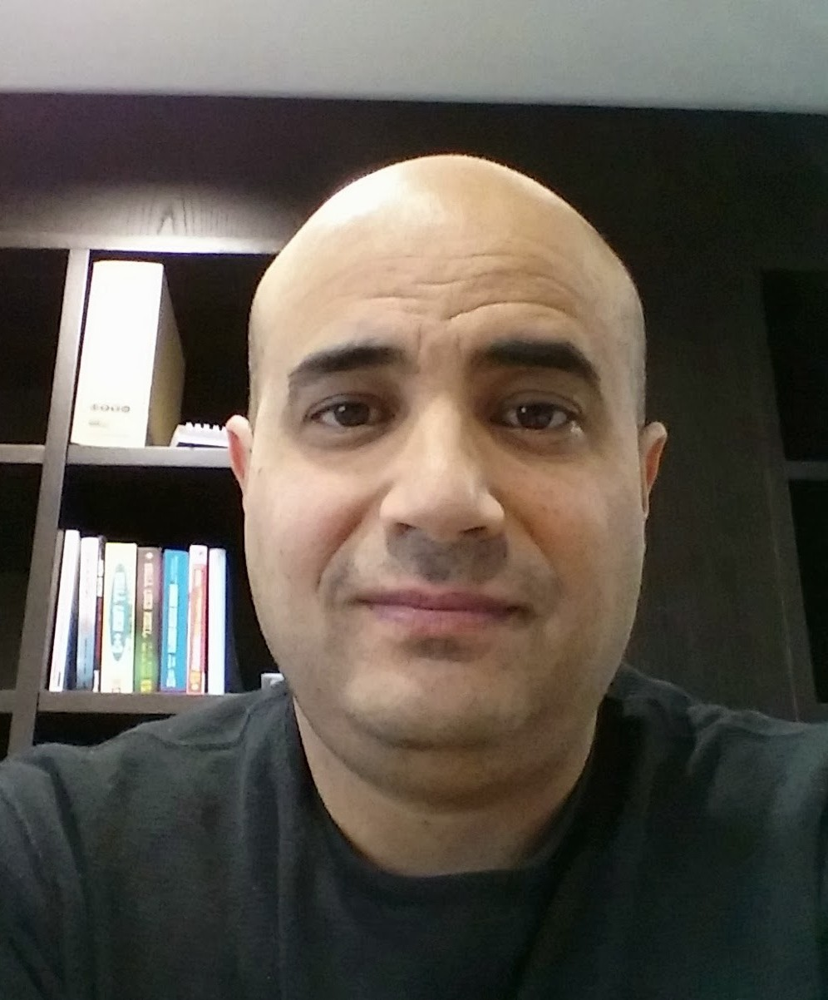

Hi, I'm
IT Manager & Infrastructure Leader
25+ years leading IT infrastructure, networks, and system teams across healthcare, technology, and finance. I build reliable systems and high-performing teams.
See My WorkCareer
Herzliya Medical Center Ltd.
Celltick Technologies
Leumit Health Services
Work
Personal Project
Personal Tool
Tech